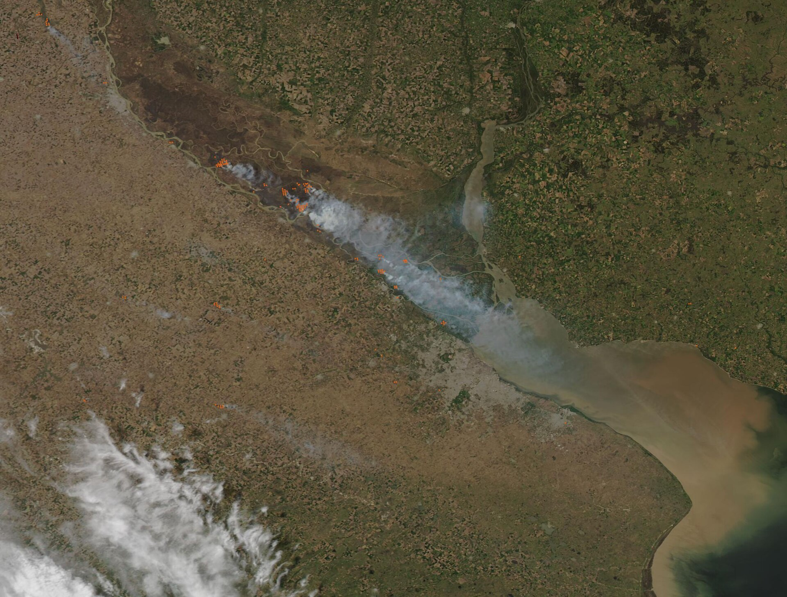
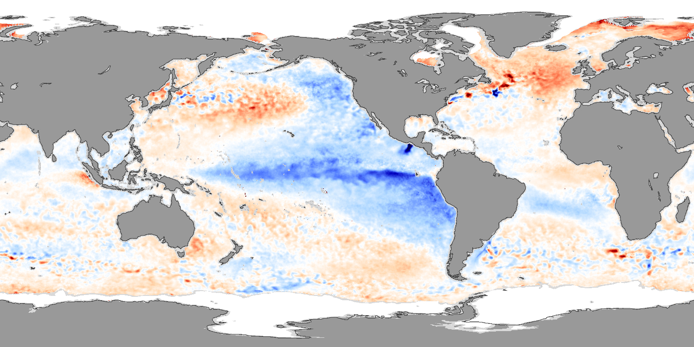

El ENSO, región por región
Cuánto acompañan la lluvia de cada región argentina y el estado del Pacífico, medido sobre el archivo CHIRPS desde 1981.
El tamaño del círculo es la fuerza de la asociación anual. El borde discontinuo marca las regiones cuyo valor no sobrevive al ajuste por comparaciones múltiples: ahí el mapa no afirma nada.

El mapa
Cada círculo se dibuja sobre el centro de una caja rectangular de CHIRPS, no sobre una provincia ni sobre una cuenca. El radio crece con el valor absoluto de la correlación de Pearson entre el ONI y la anomalía de lluvia de esa caja.
La caja de Patagonia solo llega hasta los 50°S: deja afuera Tierra del Fuego y el extremo sur de Santa Cruz. La nieve y el relieve limitan la precisión de CHIRPS en Cuyo y en la cordillera.
Región por región
El mismo contenido del mapa, en texto. El valor es la correlación anual de mejor retardo; los asteriscos indican el nivel de q tras el ajuste de Benjamini-Yekutieli.
Cómo leerlo sin pasarse
Una asociación histórica no es un pronóstico. Dice que, en el archivo, los años con el Pacífico cálido llegaron acompañados de más lluvia en esa caja; no dice cuánta lluvia va a caer el mes que viene en un campo concreto.
Un círculo discontinuo tampoco demuestra que no exista un vínculo físico. Significa que, con la cantidad de comparaciones que hace este tracker, el valor no se distingue del ruido.
Para lluvia y niveles de río en los próximos meses, el pronóstico operativo lo publican el Servicio Meteorológico Nacional y el Instituto Nacional del Agua.


La otra fase
Los mismos círculos cambian de signo cuando el Pacífico se enfría. La asociación que apunta a más lluvia durante El Niño apunta a menos durante La Niña, y con la misma incertidumbre.
